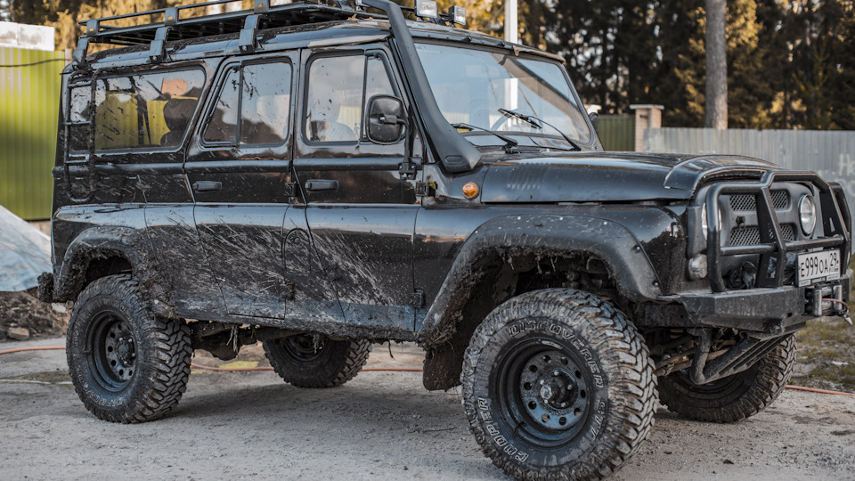

Отечественные внедорожники

УАЗ 3153
Год выпуска 2002
Кузов внедорожник 5дв.
Двигатель 2.9 л / 84 л.с. / Бензин, газ, дизель.
УАЗ-3153 — полноприводный грузопассажирский автомобиль повышенной проходимости с пятидверным девятиместным цельнометаллическим кузовом и увеличенной колесной базой, длиннобазная версия УАЗ-31514. На автомобиль устанавливали более мощный 2,89-литровый мотор мощностью в 84 лошадиных силы УМЗ-4218.
Выпускался с 1996 до 2010 года мелкосерийным производством.
УАЗ-3153 может применяться для буксировки прицепа, так как имеет тягово-сцепное устройство шарового типа. Допустимая полная масса буксируемого прицепа с тормозами 1500 кг, без тормозов 750 кг.
Подвеска или полностью пружинная, или же спереди пружинная, сзади на малолистовых рессорах. По сравнению с базовой версией была улучшена отделка салона. Во внешнем оформлении активно использовали пластик, зачастую в ущерб прочности. В стандартную комплектацию входил гидроусилитель руля, как и ремни безопасности с момента начала сборки.
На базе УАЗ-3153 создан УАЗ-3159 «Барс».

LADA Niva Legend
Год выпуска 1977
Кузов внедорожник 3дв.
Двигатель 1.7 л. / 83 л.с. / Бензин, газ, дизель.
LADA Niva Legend — автомобиль со всемирно известным дизайном, в котором продумана каждая деталь. Короткие свесы улучшают проходимость на пересечённой местности и позволяют безопасно парковаться вплотную к бордюрам. Компактный кузов — это удачное решение и для города, и для леса. А скругленные линии капота, дверей и колесных арок — классическое решение, актуальное всегда и везде.